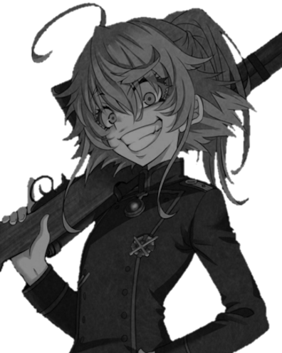

 Un hombre despiadado con sed de sangre reencarnado en un cuerpo de una infante de 12 años gracias a un extraño Dios.
Degurechaff es una niña de apariencia inocente, mide 1.50 metros y cuenta con una voz adorable y unos grandes ojos azules. Sin embargo, nadie se espera que oculte una ambición por matar y ver llorar a sus enemigos, superando en este último aspecto a los líderes más crueles y despiadados de su momento.
Su nuevo cuerpo pequeño y ágil le fue de suma utilidad a la hora de pelear con los seres más gigantes y brutales. Degurechaff fue de buen servicio en su pelea contra los vampiros.